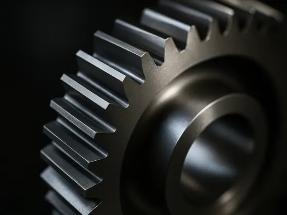
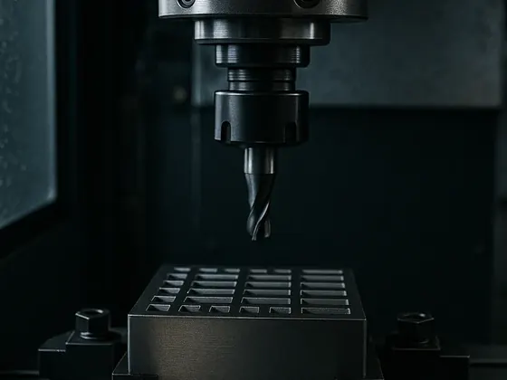
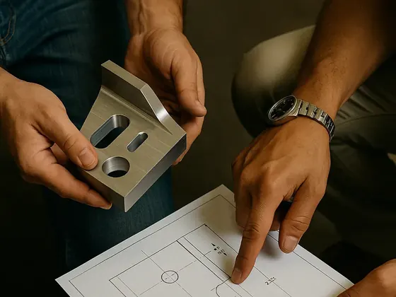
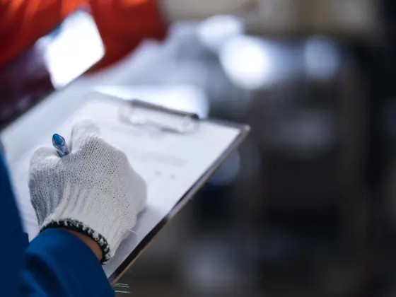
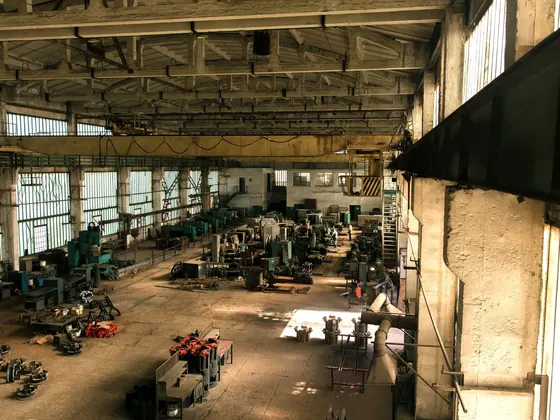
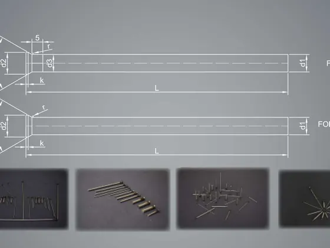
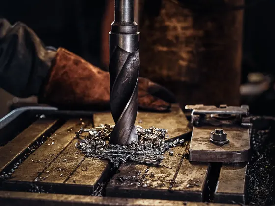
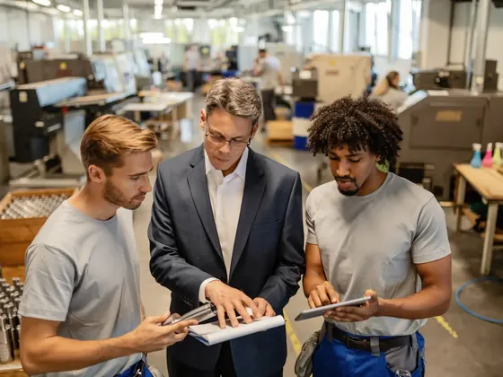
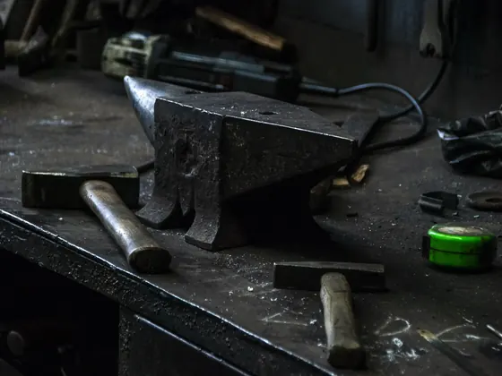
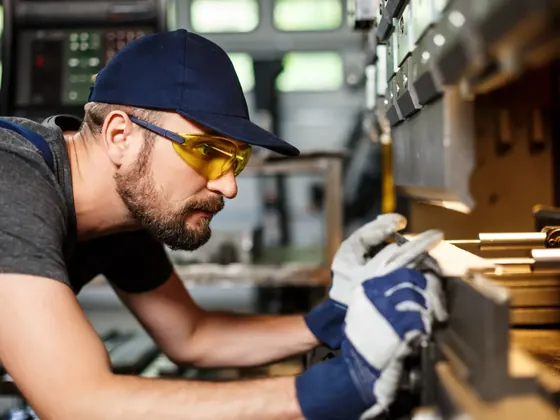

Stručnost u preciznom inženjerstvu
Svaki projekat počinje detaljnom tehničkom analizom i kompletnom CAD/CAM dokumentacijom. Naši inženjeri projektuju alate i komponente koji ispunjavaju najzahtjevnije industrijske standarde.
Ugovorna proizvodnja visokopreciznih struganih i glodanih komponenti, izrada alata i CNC obrada metala za industrijske kupce u BiH, EU i regionu.
Alat d.o.o. Konjic je kompanija s tradicijom od 1952. godine, specijalizirana za ugovornu proizvodnju visokopreciznih struganih i glodanih komponenti za različite industrijske primjene.
Vođeni težnjom za preciznošću i kvalitetom, kontinuirano unapređujemo proizvodne procese, razvijamo tehnološke mogućnosti i odgovaramo na sve zahtjevnije potrebe savremene industrije. Njegujemo okruženje u kojem stručnost, timski rad i inovacije predstavljaju temelj našeg uspjeha – gradeći dugoročna partnerstva i pouzdana rješenja.

Preciznost izmjerena tolerancijama, produktivnost dokazana projektima – ovo su brojevi koji definišu naš pogon.
Svaka komponenta izrađuje se precizno i pažljivo – od tehničkih crteža i CAD podataka do konačne isporuke.
Visokoprecizno tokarenje osovina, čahura, dijelova s navojem i drugih preciznih komponenti – uske tolerancije i ujednačen kvalitet u malim, srednjim i velikim serijama.
do Ø300 mm · dužina do 800 mm 02Obrada malih, složenih i vitkih komponenti na Citizen automatima s FMB automatskim dodavačima šipki – kontinuirana i efikasna proizvodnja uz odličnu ponovljivost.
do Ø32 mm · dužina do 320 mm 033-osno i 5-osno glodanje metalnih komponenti s visokom dimenzionalnom tačnošću i odličnim kvalitetom površine.
3-osno 1.050×560×510 · 5-osno 750×600×520 mm 04Visokoprecizno rezanje čeličnih ploča i profila tračnom pilom; dostupno i plinsko rezanje.
tračna pila do Ø400 mm 05Vanjsko, unutrašnje i centerless brušenje te poliranje okruglih i ravnih površina za uske tolerancije na završnim površinama.
tolerancije do ±0,02 mm 06HAUSER koordinatne bušilice i brusilice za pozicijsko bušenje visoke tačnosti.
sto 800×700 mm · dubina do 140 mm 07Potapajuća EDM obrada i žično rezanje elektrodama od bakra i grafita – idealno za kompleksne šupljine i kaljene alatne čelike.
do 500×350 mm 08Vakuum i zaštitna atmosfera, površinsko kaljenje, nitriranje, žarenje i otpuštanje zaostalih napona – uz metalografsku analizu i ispitivanje tvrdoće.
u saradnji s partnerima 09Cinčanje, niklovanje, kromiranje, fosfatiranje, kalajisanje, bakarisanje i drugi postupci galvanske obrade.
u saradnji s partnerima
Svaki projekat počinje detaljnom tehničkom analizom i kompletnom CAD/CAM dokumentacijom. Naši inženjeri projektuju alate i komponente koji ispunjavaju najzahtjevnije industrijske standarde.

CNC obradni centri, EDM sistemi i precizne brusilice – sve pod jednim krovom. Napredna oprema i decenije iskustva daju tolerancije do ±0,02 mm.

Tehničko savjetovanje, brz odgovor na ponudbene upite i servisna podrška u svakoj fazi projekta – od prvog kontakta do preuzimanja gotovog alata.

Svaki dio prolazi međuoperacijsku i završnu kontrolu dimenzija preciznim mjernim instrumentima, uz potpunu provjeru geometrije prije otpreme.

Vertikalno organizovan proces – od konstrukcije alata do finalne obrade i kontrole kvaliteta – znači jednog odgovornog partnera za cijeli projekat.

Radimo prema tehničkim crtežima, CAD datotekama, skicama ili fizičkim uzorcima, uz savjetovanje i optimizaciju konstrukcije radi lakše izrade i nižih troškova.

Popravke alata, korekcije mjera i zamjenu istrošenih elemenata izvodimo uz minimalan zastoj vaše proizvodnje.

Alatničari, CNC operateri, tehničari i inženjeri sa znanjem koje se prenosi godinama. U razvoj kadra ulažemo jednako kao u tehnologiju.

Od 1952. godine u Konjicu gradimo alate i znanje koje se prenosi s generacije na generaciju. Iskustvo decenija ugrađeno je u svaki projekat.

Sa izvoznim udjelom od 70%, naši proizvodi stižu do industrijskih partnera u Evropi i regionu – uz dosljedno poštovanje rokova isporuke.
Sistem upravljanja kvalitetom prema ISO 9001 – međuoperacijska i završna kontrola dimenzija, potpuna provjera geometrije i uparivanje sklopova prije isporuke.
Pošaljite nam upit s tehničkim crtežom (PDF) i 3D modelom (STEP). Naš tim analizira vaše zahtjeve i odgovara u roku od jednog radnog dana.